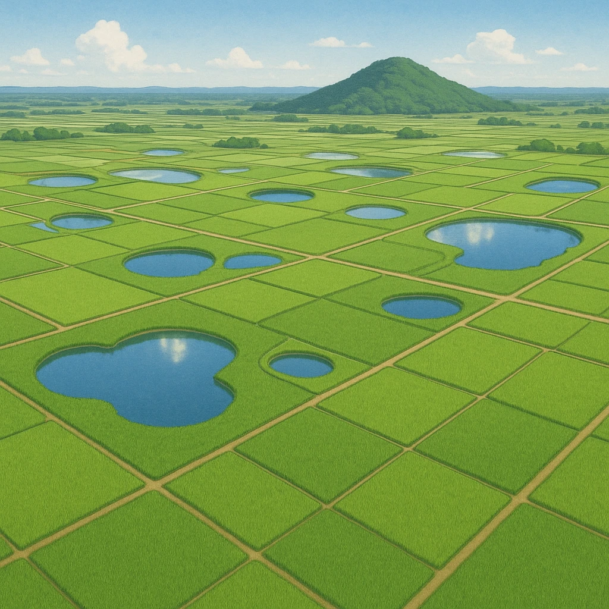

2-4
讃岐平野
雨が少ないから、
水をためる・水を引く
四国山地
讃岐平野（香川県）
⑤
が とにかく多い
吉野川（徳島県）
⑥
（1974年〜）
山地をトンネルでぬけて水を送る

昔からの工夫
かんがい用の
⑤
ため池
が多い
雨が少なく大きな川もないため、雨水をためて田に配る。香川県には1万以上もある。
新しい工夫
⑥
香川用水
を利用
徳島県の
吉野川
から水を引いた用水路。1970年代に完成し、水不足がやわらいだ。
★頻出
「①の多い平野＝
讃岐平野
」「②の水もと＝
吉野川
」。
干害
（水不足の害）対策と書けると強い。
第14章 中国・四国地方
SEED EDUCATION